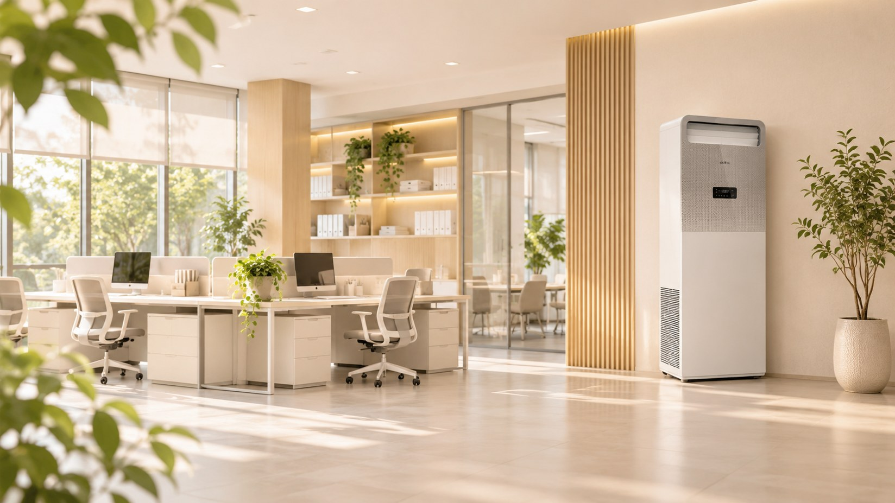

HAATZ 제품 안내
환기·공기질 솔루션
공간에 맞는 환기청정기, 환풍기, 공기질 관리기기를 살펴보고 모델별 공식 자료를 확인하세요.

제품 24개


환기청정기
일반 환기청정기(세대용)
PHES-100P-JMBP/2 · PHES-150P-JMBP/2 · PHES-200P-JMBP/2 · PHES-250P-JMBP/2
주거 세대에서 실내 환기와 공기 여과를 함께 관리하는 장비입니다.
하츠 공식 사양
환기청정기
코나C 상업용 환기청정기
PHES-150E-JM · PHES-250E-JM · PHES-350E-JM · PHES-500E-JM · PHES-800E-JM · PHES-1000E-JM · PHES-1500E-JM · PHES-2000E-JM
상업시설과 다중이용시설에 외기를 공급하고 실내 공기를 배출하는 제품군입니다.
하츠 공식 사양


환기청정기
힐로 W
HAVM-150W · A03/B03 · A01/B01 · A02/B02
천장 공사가 어려운 현장에서 검토할 수 있는 벽부착형 제품입니다. 가로형·세로측면형·세로배면형이 있습니다.
하츠 공식 사양
환기청정기
힐로 S
HAVM-150SW · A03/B03 · A01/B01 · A02/B02
벽면에 설치하는 환기청정기입니다. 가로형·세로측면형·세로배면형 중 현장 조건에 맞는 모델을 확인하세요.
하츠 공식 사양


환기청정기
코나 B
PHES-150B / 200B / 250B / 300B · C01/D01
코나 B 천장형 환기청정기입니다. 150·200·250·300 계열에서 설치 조건에 맞는 형식을 확인하세요.
하츠 공식 사양
환기청정기
코나 H
PHES-150H / 200H / 250H / 300H · C01/D01
코나 H 천장형 제품군입니다. C01과 D01 형식의 상세 치수와 설치 조건을 비교할 수 있습니다.
하츠 공식 사양
환기청정기
코나 S
PHES-150H / 200H / 250H / 300H · C02/D02
코나 S 천장형 제품입니다. 해당 제품군은 C02와 D02 형식으로 구분됩니다.
하츠 공식 사양
환기청정기
코나 S+
PHES-150H / 200H / 250H / 300H · C03/D03
코나 S+ 천장형 제품입니다. 해당 제품군은 C03과 D03 형식으로 구분됩니다.
하츠 공식 사양

환풍기
허리케인 / MD
HBF-H501(MD) · HBF-H502(MD) · HBF-H503(MD)
욕실 환풍기 시리즈입니다. MD 모델의 일체형 전동댐퍼는 역류와 냄새 유입을 줄이는 데 사용됩니다.
하츠 공식 사양


제품 및 설치 상담
설치 공간과 관심 모델을 알려주시면 상담이 수월합니다.